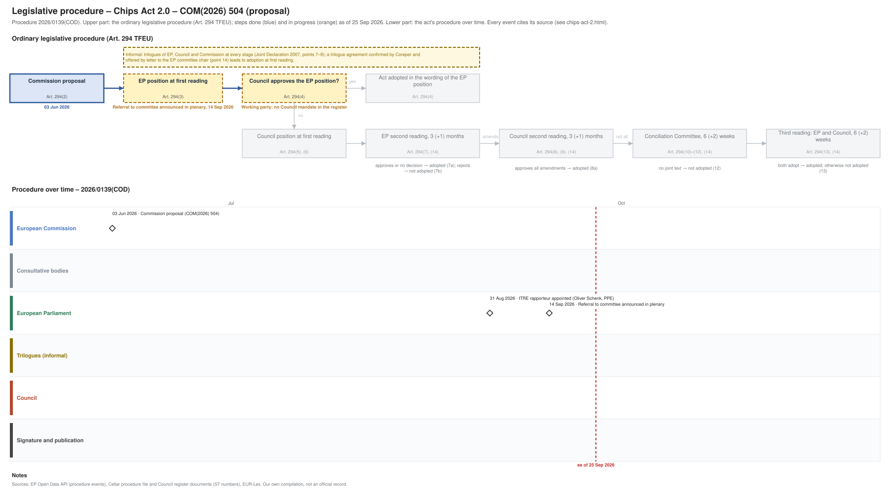

← All procedures · Regulation timeline
Procedure 2026/0139(COD), ongoing, as of 25 Sep 2026. Drawing: SVG · PNG · PDF (A3) · draw.io

| Date | Actor | Event | Document | Source |
|---|---|---|---|---|
| 2026-06-03 | European Commission | Commission proposal (Art. 294(2) TFEU) | COM(2026) 504 | Cellar (CELEX 52026PC0504) |
| 2026-08-31 | European Parliament | ITRE rapporteur appointed (Oliver Schenk, PPE) | EP Open Data API, procedure 2026-0139 (participation RAPPORTEUR) | |
| 2026-09-14 | European Parliament | Referral to committee announced in plenary | EP Open Data API, procedure 2026-0139 (REFERRAL) |
| Date | Document | Kind | Subject |
|---|---|---|---|
| 2026-06-03 | ST 10094/26 | council-transmission | Proposal for a REGULATION OF THE EUROPEAN PARLIAMENT AND OF THE COUNCIL on a framework of measures for strengthening the Union's semiconductor ecosystem, … |
| 2026-06-03 | ST 10094/26 ADD 1 | council-transmission | ANNEXES to the PROPOSAL FOR A REGULATION OF THE EUROPEAN PARLIAMENT AND OF THE COUNCIL on a framework of measures for strengthening Europe's semiconductor … |
| 2026-06-26 | WK 9476/26 | council-note | Presidency flash note for the meeting of the Working Party on Competitiveness and Growth (Industry) on 01 July 2026 (afternoon session) |
| 2026-07-08 | WK 10223/26 | council-note | Proposal on Chips Act 2.0 - Recital-article correlation table |
| 2026-07-09 | WK 10211/26 | council-note | Proposal on Chips Act 2.0 – Presentation by the Commission on Pillar I and II of the proposal |
| 2026-09-11 | ST 12887/26 | council-note | Preparation of the Competitiveness Council (Internal Market, Industry, Research and Space) on 24 September 2026 Regulation on a European Chips Act 2.0 - Policy … |
{kind=link}
{kind=link}